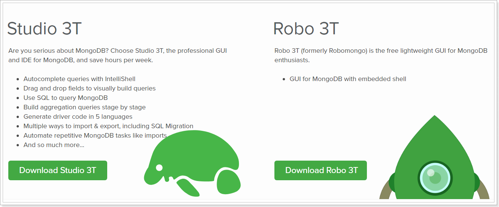
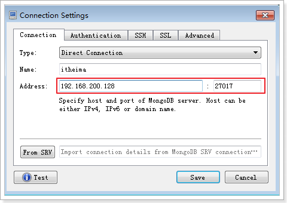

第2章 - MongoDB和评论管理
学习目标：
- 了解什么是MongoDB
- 掌握MongoDB的安装
- 掌握MongoDB的常用命令
- 掌握mongodb-driver的基本使用
- 掌握SpringDataMongoDB的使用
- 能够实现文章评论功能开发
1 MongoDB简介
1.1 文章评论数据分析
文章评论两项功能存在以下特点：
- 数据量大
- 写入操作频繁
- 价值较低
对于这样的数据，我们更适合使用MongoDB来实现数据的存储
1.2 什么是MongoDB
MongoDB是一个基于分布式文件存储的数据库。由C++语言编写。旨在为WEB应用提供可扩展的高性能数据存储解决方案。 MongoDB是一个介于关系数据库和非关系数据库之间的产品，是非关系数据库当中功能最丰富，最像关系数据库的。它支持的数据结构非常松散，是类似json的bson格式，因此可以存储比较复杂的数据类型。
1.3 MongoDB特点
Mongo最大的特点是它支持的查询语言非常强大，其语法有点类似于面向对象的查询语言，几乎可以实现类似关系数据库单表查询的绝大部分功能，而且还支持对数据建立索引。
它的特点是高性能、易部署、易使用，存储数据非常方便。主要功能特性有：
- 面向集合存储，易存储对象类型的数据。
- 模式自由。
- 支持动态查询。
- 支持完全索引，包含内部对象。
- 支持查询。
- 支持复制和故障恢复。
- 使用高效的二进制数据存储，包括大型对象（如视频等）。
- 自动处理碎片，以支持云计算层次的扩展性。
- 支持RUBY，PYTHON，JAVA，C++，PHP，C#等多种语言。
- 文件存储格式为BSON（一种JSON的扩展）。
1.5 MongoDB体系结构
MongoDB 的逻辑结构是一种层次结构。主要由：文档(document)、集合(collection)、数据库(database)这三部分组成的。逻辑结构是面向用户的，用户使用 MongoDB 开发应用程序使用的就是逻辑结构。
- MongoDB 的文档（document），相当于关系数据库中的一行记录。
- 多个文档组成一个集合（collection），相当于关系数据库的表。
- 多个集合（collection），逻辑上组织在一起，就是数据库（database）。
- 一个 MongoDB 实例支持多个数据库（database）。
文档(document)、集合(collection)、数据库(database)的层次结构如下图:

| MongoDb | 关系型数据库Mysql |
|---|---|
| 数据库(databases) | 数据库(databases) |
| 集合(collections) | 表(table) |
| 文档(document) | 行(row) |
1.6 MongoDB数据类型
| 数据类型 | 描述 |
|---|---|
| String | 字符串。存储数据常用的数据类型。在 MongoDB 中，UTF-8 编码的字符串才是合法的。 |
| Integer | 整型数值。用于存储数值。根据你所采用的服务器，可分为 32 位或 64 位。 |
| Boolean | 布尔值。用于存储布尔值（真/假）。 |
| Double | 双精度浮点值。用于存储浮点值。 |
| Array | 用于将数组或列表或多个值存储为一个键。 |
| Timestamp | 时间戳。记录文档修改或添加的具体时间。 |
| Object | 用于内嵌文档。 |
| Null | 用于创建空值。 |
| Date | 日期时间。用 UNIX 时间格式来存储当前日期或时间。你可以指定自己的日期时间：创建 Date 对象，传入年月日信息。 |
| Object ID | 对象 ID。用于创建文档的 ID。 |
| Binary Data | 二进制数据。用于存储二进制数据。 |
| Code | 代码类型。用于在文档中存储 JavaScript 代码。 |
| Regular expression | 正则表达式类型。用于存储正则表达式。 |
特殊说明：
ObjectId
ObjectId 类似唯一主键，可以很快的去生成和排序，包含 12 bytes，含义是：
- 前 4 个字节表示创建 unix 时间戳，格林尼治时间 UTC 时间，比北京时间晚了 8 个小时
- 接下来的 3 个字节是机器标识码
- 紧接的两个字节由进程 id 组成 PID
- 最后三个字节是随机数

MongoDB 中存储的文档必须有一个 _id 键。这个键的值可以是任何类型的，默认是个 ObjectId 对象
时间戳
BSON 有一个特殊的时间戳类型，与普通的日期类型不相关。时间戳值是一个 64 位的值。其中：
- 前32位是一个 time_t 值【与Unix新纪元（1970年1月1日）相差的秒数】
- 后32位是在某秒中操作的一个递增的序数
在单个 mongod 实例中，时间戳值通常是唯一的。
日期
表示当前距离 Unix新纪元（1970年1月1日）的毫秒数。日期类型是有符号的, 负数表示 1970 年之前的日期。
2 MongoDB基本使用
2.1 window系统MongoDB安装
安装
安装资料中的
mongodb-win32-x86_64-2008plus-ssl-3.2.10-signed.msi按照提示步骤安装即可。安装完成后，软件会安装在C:\Program Files\MongoDB 目录中
我们要启动的服务程序就是C:\Program Files\MongoDB\Server\3.2\bin目录下的mongod.exe，为了方便我们每次启动，我们可以像配置jdk一样，将C:\Program Files\MongoDB\Server\3.2\bin 设置到环境变量path中。
- 启动
- 创建一个文件夹
d:\data，用于存放数据的目录data - 打开命令行窗口，执行以下命令
mongod --dbpath=D:\data
我们在启动信息中可以看到，mongoDB的默认端口是27017，如果我们想改变默认的启动端口，可以通过--port来指定端口，例如
xxxxxxxxxxmongod --dbpath=D:\data -port 8989
- 登录
再打开一个新的命令行窗口，执行以下命令：（）
xxxxxxxxxxmongo 127.0.0.1:27017以上命令中，如果ip是本地服务，端口号是27017，则后面的127.0.0.1:27017可以省略
- 退出
xxxxxxxxxxexit
2.2 Docker 环境下MongoDB安装
在Linux虚拟机中创建mongo容器，命令如下：
xxxxxxxxxxdocker run -id --name mongo -p 27017:27017 mongo
在Window命令行窗口出入登录命令：
xxxxxxxxxxmongo 192.168.200.128
2.3 常用命令
2.3.1 选择和创建数据库
选择和创建数据库的语法格式：
xxxxxxxxxxuse 数据库名称如果数据库存在则选择该数据库，如果数据库不存在则自动创建。以下语句创建commentdb数据库：
xxxxxxxxxxuse commentdb
查看数据库：
xxxxxxxxxxshow dbs
查看集合,需要先选择数据库之后，才能查看该数据库的集合：
xxxxxxxxxxshow collections
2.3.2 插入与查询文档
选择数据库后，使用集合来对文档进行操作，插入文档语法格式：
xxxxxxxxxxdb.集合名称.insert(数据);插入以下测试数据：
xxxxxxxxxxdb.comment.insert({content:"十次方课程",userid:"1011"})
查询集合的语法格式：
xxxxxxxxxxdb.集合名称.find()查询spit集合的所有文档，输入以下命令：
xxxxxxxxxxdb.comment.find()发现文档会有一个叫_id的字段，这个相当于我们原来关系数据库中表的主键，当你在插入文档记录时没有指定该字段，MongoDB会自动创建，其类型是ObjectID类型。如果我们在插入文档记录时指定该字段也可以，其类型可以是ObjectID类型，也可以是MongoDB支持的任意类型。
输入以下测试语句:
xxxxxxxxxxdb.comment.insert({_id:"1",content:"到底为啥出错",userid:"1012",thumbup:2020});db.comment.insert({_id:"2",content:"加班到半夜",userid:"1013",thumbup:1023});db.comment.insert({_id:"3",content:"手机流量超了咋办",userid:"1013",thumbup:111});db.comment.insert({_id:"4",content:"坚持就是胜利",userid:"1014",thumbup:1223});
按一定条件来查询，比如查询userid为1013的记录，只要在find()中添加参数即可，参数也是json格式，如下：
xxxxxxxxxxdb.comment.find({userid:'1013'})只需要返回符合条件的第一条数据，我们可以使用findOne命令来实现：
xxxxxxxxxxdb.comment.findOne({userid:'1013'})返回指定条数的记录，可以在find方法后调用limit来返回结果，例如：
xxxxxxxxxxdb.comment.find().limit(2)
2.3.3 修改与删除文档
修改文档的语法结构：
xxxxxxxxxxdb.集合名称.update(条件,修改后的数据)修改_id为1的记录，点赞数为1000，输入以下语句：
xxxxxxxxxxdb.comment.update({_id:"1"},{thumbup:1000})执行后发现，这条文档除了thumbup字段其它字段都不见了。
为了解决这个问题，我们需要使用修改器$set来实现，命令如下：
xxxxxxxxxxdb.comment.update({_id:"2"},{$set:{thumbup:2000}})
删除文档的语法结构：
xxxxxxxxxxdb.集合名称.remove(条件)以下语句可以将数据全部删除，慎用~
xxxxxxxxxxdb.comment.remove({})删除条件可以放到大括号中，例如删除thumbup为1000的数据，输入以下语句：
xxxxxxxxxxdb.comment.remove({thumbup:1000})
2.3.4 统计条数
统计记录条件使用count()方法。以下语句统计spit集合的记录数：
xxxxxxxxxxdb.comment.count()按条件统计 ，例如统计userid为1013的记录条数：
xxxxxxxxxxdb.comment.count({userid:"1013"})
2.3.5 模糊查询
MongoDB的模糊查询是通过正则表达式的方式实现的。格式为：
xxxxxxxxxx/模糊查询字符串/查询评论内容包含“流量”的所有文档，代码如下：
xxxxxxxxxxdb.comment.find({content:/流量/})查询评论内容中以“加班”开头的，代码如下：
xxxxxxxxxxdb.comment.find({content:/^加班/})
2.3.6 大于 小于 不等于
<, <=, >, >= 这个操作符也是很常用的，格式如下:
xxxxxxxxxxdb.集合名称.find({ "field" : { $gt: value }}) // 大于: field > valuedb.集合名称.find({ "field" : { $lt: value }}) // 小于: field < valuedb.集合名称.find({ "field" : { $gte: value }}) // 大于等于: field >= valuedb.集合名称.find({ "field" : { $lte: value }}) // 小于等于: field <= valuedb.集合名称.find({ "field" : { $ne: value }}) // 不等于: field != value查询评论点赞数大于1000的记录：
xxxxxxxxxxdb.comment.find({thumbup:{$gt:1000}})
2.3.7 包含与不包含
包含使用$in操作符
查询评论集合中userid字段包含1013和1014的文档：
xxxxxxxxxxdb.comment.find({userid:{$in:["1013","1014"]}})
不包含使用$nin操作符
查询评论集合中userid字段不包含1013和1014的文档：
xxxxxxxxxxdb.comment.find({userid:{$nin:["1013","1014"]}})
2.3.8 条件连接
我们如果需要查询同时满足两个以上条件，需要使用$and操作符将条件进行关联（相当于SQL的and）。格式为：
xxxxxxxxxx$and:[ {条件},{条件},{条件} ]查询评论集合中thumbup大于等于1000 并且小于2000的文档：
xxxxxxxxxxdb.comment.find({$and:[ {thumbup:{$gte:1000}} ,{thumbup:{$lt:2000} }]})
如果两个以上条件之间是或者的关系，我们使用操作符进行关联，与前面and的使用方式相同，格式为：
xxxxxxxxxx$or:[ {条件},{条件},{条件} ]查询评论集合中userid为1013，或者点赞数小于2000的文档记录：
xxxxxxxxxxdb.comment.find({$or:[ {userid:"1013"} ,{thumbup:{$lt:2000} }]})
2.3.9 列值增长
对某列值在原有值的基础上进行增加或减少，可以使用$inc运算符：
xxxxxxxxxxdb.comment.update({_id:"2"},{$inc:{thumbup:1}})
2.4 可视化工具robomongo
Mongodb有很多可视化工具，这里我们使用robomongo，可以访问官网：https://robomongo.org/

我们可以看到有两个版本Studio 3T和Robo 3T
Studio 3T是一个功能很强大的收费版。。。
Robo 3T前身就是Robomongo，是一个免费的可视化工具，我们使用他可以很轻松的进行Mongodb的管理。
在资料中找到robo3t-1.3.1-windows-x86_64-7419c406.exe并双击安装。打开后看到以下界面：

点击Create创建连接，进行如下配置即可：

3 mongodb-driver使用
mongodb-driver是mongo官方推出的java连接mongoDB的驱动包，相当于JDBC驱动。我们现在来使用mongodb-driver完成对Mongodb的操作。
3.1 环境准备
创建工程，并添加以下依赖：
xxxxxxxxxx<dependency> <groupId>org.mongodb</groupId> <artifactId>mongodb-driver</artifactId> <version>3.10.1</version></dependency>
3.2 使用mongodb-driver
3.2.1 查询所有
xpublic void test1() { //创建连接 MongoClient client = new MongoClient("192.168.200.128"); //打开数据库 MongoDatabase commentdb = client.getDatabase("commentdb"); //获取集合 MongoCollection<Document> comment = commentdb.getCollection("comment"); //查询 FindIterable<Document> documents = comment.find(); //查询记录获取文档集合 for (Document document : documents) { System.out.println("_id：" + document.get("_id")); System.out.println("内容：" + document.get("content")); System.out.println("用户ID:" + document.get("userid")); System.out.println("点赞数：" + document.get("thumbup")); } //关闭连接 client.close();}
3.2.2 根据_id查询
每次使用都要用到MongoCollection，进行抽取：
xxxxxxxxxxprivate MongoClient client;private MongoCollection<Document> comment;public void init() { //创建连接 client = new MongoClient("192.168.200.128"); //打开数据库 MongoDatabase commentdb = client.getDatabase("commentdb"); //获取集合 comment = commentdb.getCollection("comment");}public void after() { client.close();}
测试根据_id查询：
xxxxxxxxxxpublic void test2() { //查询 FindIterable<Document> documents = comment.find(new BasicDBObject("_id", "1")); //查询记录获取文档集合 for (Document document : documents) { System.out.println("_id：" + document.get("_id")); System.out.println("内容：" + document.get("content")); System.out.println("用户ID:" + document.get("userid")); System.out.println("点赞数：" + document.get("thumbup")); }}
3.2.3 新增
xxxxxxxxxxpublic void test3() { Map<String, Object> map = new HashMap(); map.put("_id", "6"); map.put("content", "很棒！"); map.put("userid", "9999"); map.put("thumbup", 123); Document document = new Document(map); comment.insertOne(document);}
3.2.4 修改
xxxxxxxxxxpublic void test4() { //修改的条件 Bson filter = new BasicDBObject("_id", "6"); //修改的数据 Bson update = new BasicDBObject("$set", new Document("userid", "8888")); comment.updateOne(filter, update);}
3.2.5 删除
xxxxxxxxxxpublic void test5() { //删除的条件 Bson filter = new BasicDBObject("_id", "6"); comment.deleteOne(filter);}
4 文章评论实现
SpringDataMongoDB是SpringData家族成员之一，用于操作MongoDb的持久层框架，封装了底层的mongodb-driver。本功能使用SpringDataMongoDB进行开发
4.1 需求分析
评论集合结构：
| 专栏文章评论 | comment | ||
|---|---|---|---|
| 字段名称 | 字段含义 | 字段类型 | 备注 |
| _id | ID | 文本 | |
| articleid | 文章ID | 文本 | |
| content | 评论内容 | 文本 | |
| userid | 评论人ID | 文本 | |
| parentid | 评论ID | 文本 | 如果为0表示文章的顶级评论 |
| publishdate | 评论日期 | 日期 | |
| thumbup | 点赞数 | 数字 |
需要实现以下功能：
- 基本增删改查API
- 根据文章id查询评论
- 评论点赞
4.2 开发准备
在文章微服务添加依赖：
xxxxxxxxxx<dependency> <groupId>org.springframework.boot</groupId> <artifactId>spring-boot-starter-data-mongodb</artifactId></dependency>
添加配置文件：
xxxxxxxxxx data mongodb databasecommentdb host192.168.200.128
4.3 功能实现
4.3.1 基本增删改查API
创建实体类:
xxxxxxxxxxpublic class Comment implements Serializable { private String _id; private String articleid; private String content; private String userid; private String parentid; private Date publishdate; private Integer thumbup; //getter and setter....}
在com.tensquare.article.repository包中编写CommentRepository，注意不要和MyBatis的接口放在一个包：
xxxxxxxxxxpublic interface CommentRepository extends MongoRepository<Comment, String> {}
编写Service：
xxxxxxxxxxpublic class CommentService { private IdWorker idWorker; private CommentRepository commentRepository; public Comment findById(String id) { return commentDao.findById(id).get(); } public List<Comment> findAll() { return commentDao.findAll(); } public void save(Comment comment) { String id = idWorker.nextId() + ""; comment.set_id(id); //初始化数据 comment.setPublishdate(new Date()); comment.setThumbup(0); commentDao.save(comment); } public void update(Comment comment) { commentDao.save(comment); } public void deleteById(String id) { commentDao.deleteById(id); }}
编写Controller：
xxxxxxxxxx("comment")public class CommentController { private CommentService commentService; //根据id查询评论 (value = "{id}", method = RequestMethod.GET) public Result findById( String id) { Comment comment = commentService.findById(id); return new Result(true, StatusCode.OK, "查询成功", comment); } //查询所有 (method = RequestMethod.GET) public Result findAll() { List<Comment> list = commentService.findAll(); return new Result(true, StatusCode.OK, "查询成功", list); } //新增 (method = RequestMethod.POST) public Result save( Comment comment) { commentService.save(comment); return new Result(true, StatusCode.OK, "新增成功"); } //修改 (value = "{id}", method = RequestMethod.PUT) public Result update( String id, Comment comment) { comment.set_id(id); commentService.update(comment); return new Result(true, StatusCode.OK, "修改成功"); } //删除 (value = "{id}", method = RequestMethod.DELETE) public Result deleteById( String id) { commentService.deleteById(id); return new Result(true, StatusCode.OK, "删除成功"); }}
4.3.2 根据文章id查询评论
编写Controller
xxxxxxxxxx//根据文章id查询评论列表(value = "{articleId}", method = RequestMethod.GET)public Result findByarticleId( String articleId) { List<Comment> list = commentService.findByarticleId(articleId); return new Result(true, StatusCode.OK, "查询成功", list);}
编写Service
xxxxxxxxxxpublic List<Comment> findByarticleId(String articleId) { return commentDao.findByArticleid(articleId);}
编写dao
xxxxxxxxxxpublic interface CommentDao extends MongoRepository<Comment, String> { //根据文章id查询评论列表 List<Comment> findByArticleid(String articleId);}
4.3.4 评论点赞
先根据评论的id查询，再对点赞数加一
编写service
xxxxxxxxxxpublic void thumbup(String id) { //查询评论 Comment comment = commentDao.findById(id).get(); //修改点赞数 comment.setThumbup(comment.getThumbup() + 1); commentDao.save(comment);}编写Controller
xxxxxxxxxx//评论点赞(value = "thumbup/{id}", method = RequestMethod.PUT)public Result thumbup( String id) { commentService.thumbup(id); return new Result(true, StatusCode.OK, "点赞成功");}
以上操作需要操作两次数据库，性能较低，service方法优化如下：
xxxxxxxxxx private MongoTemplate mongoTemplate; public void thumbup(String id) { ////查询评论 //Comment comment = commentDao.findById(id).get(); ////修改点赞数 //comment.setThumbup(comment.getThumbup() + 1); //commentDao.save(comment); //修改条件 Query query = new Query(); query.addCriteria(Criteria.where("_id").is(id)); //修改的数据 Update update = new Update(); //在原来的基础上加一 update.inc("thumbup", 1); mongoTemplate.updateFirst(query, update, "comment"); }
4.3.5 不能重复点赞
点赞功能完成后，发现可以重复点赞，我们应该改为一个人只能点赞一次。
可以使用评论id+用户id进行标记，一个用户只能点赞一次。可以使用redis保存点赞信息，速度较快
pom.xml添加依赖：
xxxxxxxxxx<dependency> <groupId>org.springframework.boot</groupId> <artifactId>spring-boot-starter-data-redis</artifactId></dependency>
在Linux虚拟机中创建redis容器：
xxxxxxxxxxdocker run -id --name=tensquare_redis -p 6379:6379 redis
配置文件添加配置：
xxxxxxxxxx redis host192.168.200.128
修改Controller方法：
xxxxxxxxxxprivate RedisTemplate redisTemplate;//评论点赞(value = "thumbup/{id}", method = RequestMethod.PUT)public Result thumbup( String id) { //模拟获取到了用户id String userid = "123"; //在redis中查询用户是否已经点赞 Object result = redisTemplate.opsForValue().get("thumbup_" + userid + "_" + id); //如果点赞不能重复点赞 if (result != null) { return new Result(false, StatusCode.REMOTEERROR, "不能重复点赞"); } //如果没有点赞，可以进行点赞操作 commentService.thumbup(id); //保存点赞记录 redisTemplate.opsForValue().set("thumbup_" + userid + "_" + id, 1); return new Result(true, StatusCode.OK, "点赞成功");}